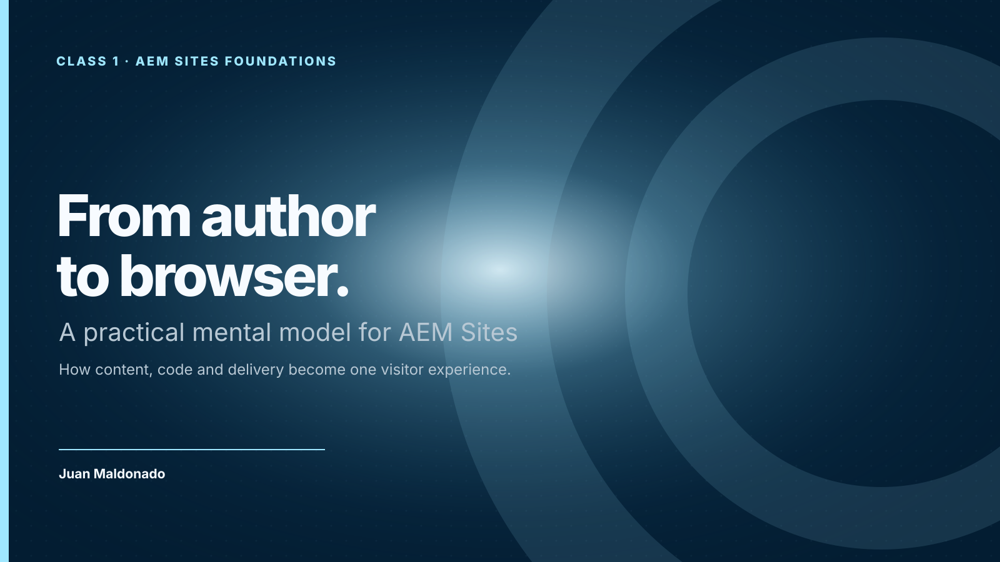
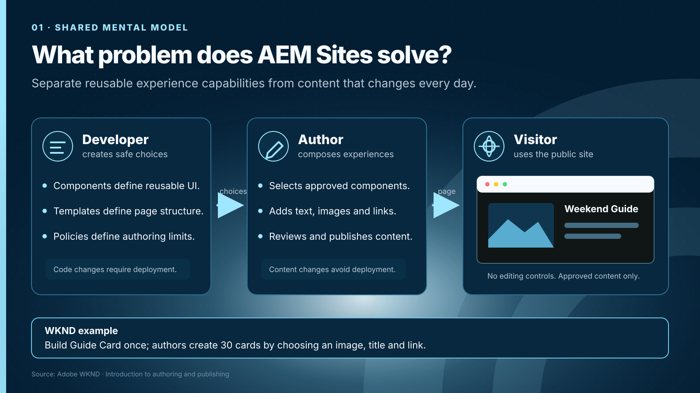
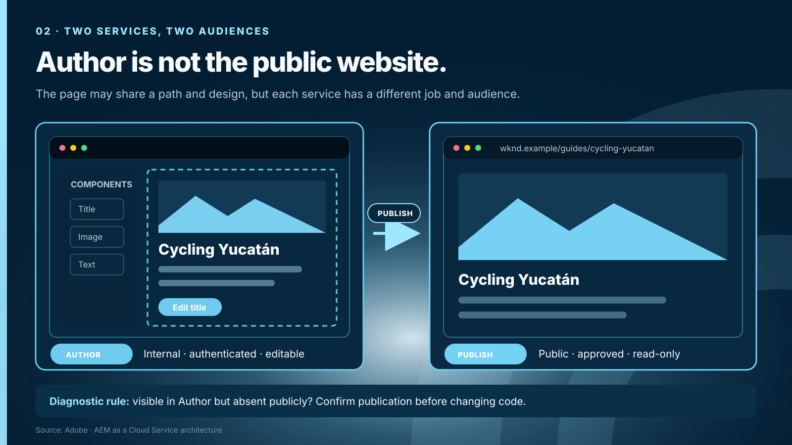
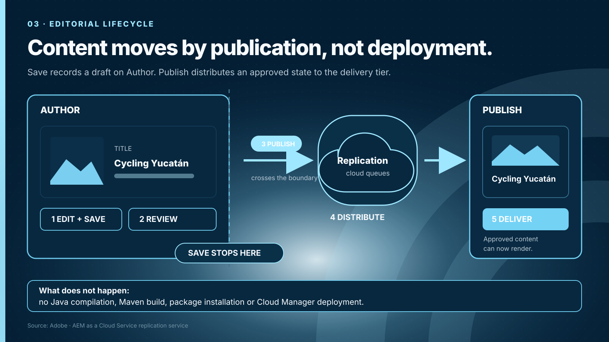
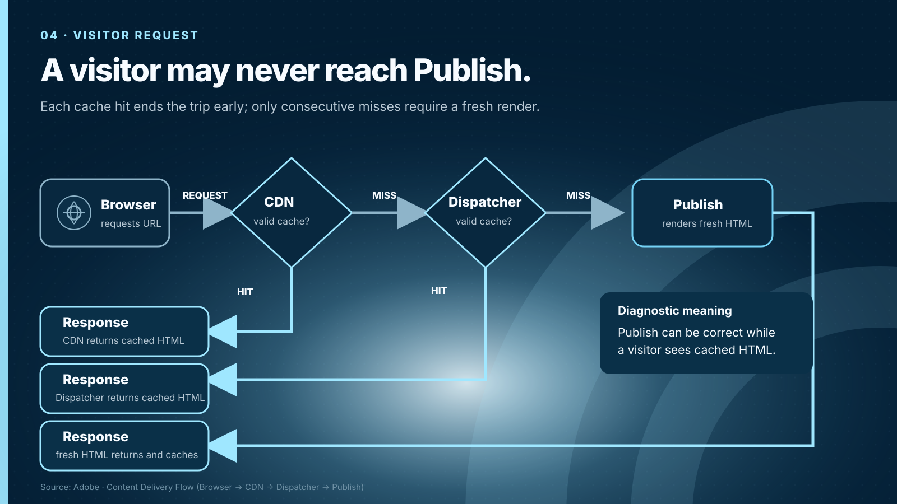
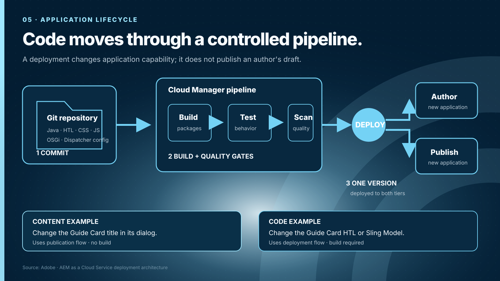
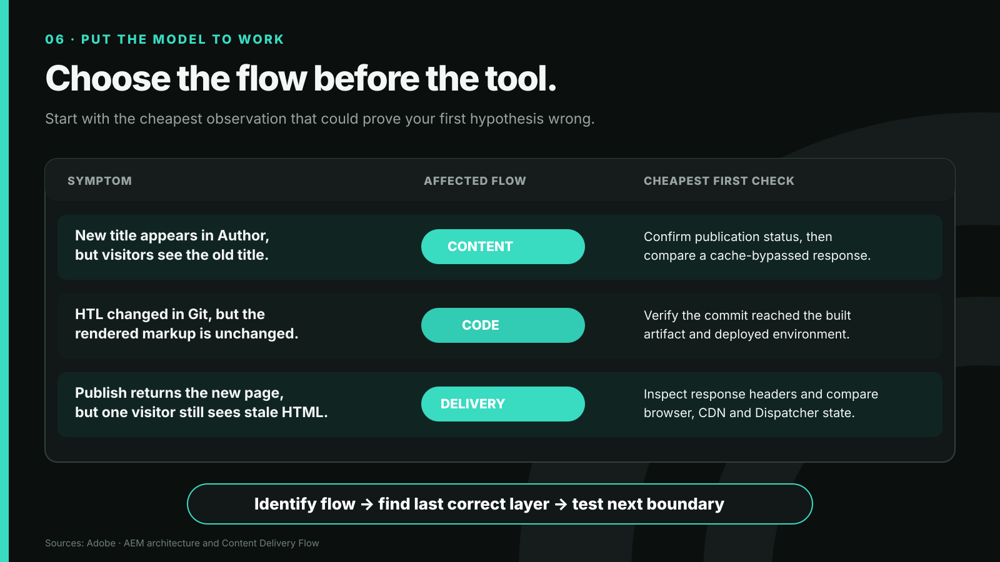
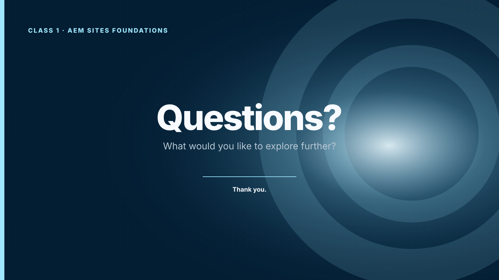

{kind=link}
Open: “Today we build one map that helps us explain changes and diagnose problems before choosing a tool.”
Class 1 · Week 1 · Day 1
Build a shared mental model of AEM Sites before opening its implementation details.
By the end of the session, each contributor can:
| Time | Activity | Facilitation |
|---|---|---|
| 0–3 | Retrieval | Chat prompt: “Where does an author work, and which service answers a visitor?” |
| 3–5 | Outcome | State the observable outcome and introduce the content/code distinction. |
| 5–18 | Slides 1–6 | Teach the two flows with one concrete WKND example. |
| 18–25 | Live demonstration | Edit a component, preview it and contrast Author with Publish. |
| 25–28 | Assignment | Explain the five scenarios and the acceptance criteria. |
| 28–30 | Exit prompt | Chat prompt: “Content and code meet when…” |
Each slide is a self-contained 16:9 vector image. On GitHub Pages, choose Copy slide as image and paste it into PowerPoint; the layout will remain unchanged. Use Download SVG when you want the sharpest possible insertion.

Open: “Today we build one map that helps us explain changes and diagnose problems before choosing a tool.”

Ask: “Which homepage change should an author make without waiting for us?” Use one answer to expose the developer/author boundary.

Emphasize: the same page can legitimately show different states on Author and Publish. Record the service and user when reproducing a problem.

Say explicitly: publishing does not compile Java, build a package or run a Cloud Manager deployment.

Ask: “Which systems see a CDN hit?” Browser and CDN; not Dispatcher or Publish.

Retrieval: dialog label changed equals code; an author filling that dialog equals content.

Close: name the affected flow, find the last correct layer and test the next boundary.

Invite questions: pause and let participants choose the direction of the conversation.
“AEM Sites separates what the experience can do from the content used in that experience. Development creates safe, reusable choices. Authors use those choices repeatedly. Our goal is not to remove governance; it is to let content change without requiring a code release.”
“Author and Publish are separate services with separate audiences. An author can save a valid change and still have no public change. When investigating an incident, always ask which service and which user can reproduce it.”
“Content follows an editorial lifecycle. Saving records work on Author. Publishing distributes approved content. That operation does not compile Java, package components or deploy a client library.”
“A visitor usually reaches delivery layers before Publish. If a cache already has a valid response, Publish may not see the request. This is why a page can be correct on Author and Publish but still appear stale to a visitor.”
“Source code follows a controlled delivery path. A commit is built, tested and deployed. At runtime, the deployed component code reads distributed content and produces the response. Keeping both flows separate is the foundation for every diagnosis in this course.”
“A visitor receives the result of three paths: published content provides values, deployed code renders them and delivery caches decide whether that response can be reused. Name the affected path first; then test the nearest boundary.”
If only a local Author SDK is available, demonstrate editing and Preview. Explain Publish with the diagram; do not pretend that a local architecture is a cloud delivery environment.
Individual work, 60–90 minutes. For every scenario, choose the most likely layer and one inexpensive check that could disprove the hypothesis.
Accept another layer when the contributor proposes a cheap check that can falsify the hypothesis.
Acceptance criteria: the diagram contains both flows, correctly places the five delivery layers and distinguishes save, content publication and code deployment. Record proficiency as not demonstrated, with support, independent or can guide; do not grade visual design.
{kind=link}
{kind=link}
{kind=link}
{kind=link}
{kind=link}
{kind=link}
{kind=link}